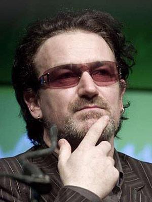

The News, Digested (23.03.2009)
SPOTIFY CHALLENGES ITUNES
By Miguel Morelli
The newest free music streaming service, Spotify, is approaching iTunes in terms of catalogue size, and is gaining users so quickly that some analysts are considering the service a potential rival to Apple’s paid download service.
Since Spotify strikes licensing deals with labels in order to stream songs in real time, users don’t have to download tracks or pay for anything, the only drawback being 20 seconds of ads between songs every half hour. Otherwise, users can pay a subscription fee of £9.99 ($14) a month or a daily charge of £0.99 ($1.30).
The founders have struck licensing deals with many of the world’s best-known record labels, from Sony and EMI to Warner Music and Naxos, and the service is expanding its catalogue at the rate of 10,000 tracks a day as more labels sign up.
Since its launch in October, more than 1 million users in seven western European countries have signed up, including 250,000 in Britain. Founders Daniel Ek and Martin Lorentzon hope to persuade users into paying the subscription fee by providing a wide range of music. It’s free, it’s legal, and it has more songs than you can hope to listen to. Will the service overthrow iTunes’ hegemony? [NewsWeek]
. . .
SXSW BIGGER THAN EVER
By Miguel Morelli
 Contrary to indications that the economic recession would hurt this year’s SXSW festival in Austin, Texas, the event has surpassed many expectations, bringing in over 1,900 artists from 40 countries. In its 23rd year, the festival has attracted 10 percent more hotel bookings, and more ticket sales for the interactive portion of the event in comparison to last year.
Contrary to indications that the economic recession would hurt this year’s SXSW festival in Austin, Texas, the event has surpassed many expectations, bringing in over 1,900 artists from 40 countries. In its 23rd year, the festival has attracted 10 percent more hotel bookings, and more ticket sales for the interactive portion of the event in comparison to last year.
The overall sentiment is “do-it-yourself” music, reflecting the growing tendency of bands producing and releasing tracks online without the use of labels or similar middlemen. Facing plummeting CD sales, the live industry has gained importance, and many bands admit to surviving almost exclusively on live concerts. Furthermore, the festival isn’t about profits, it’s about exposure.
Various panels, with the participation of industry professionals, discussed topics such as the fate of indie labels, and whether artists should be paid for radio airplay. Marc Savlov, writer for the Austin Chronicle who has attended SXSW for 20 years, says that “it gets bigger and bigger every year.” Despite the difficulties of “major” labels, more people are making music than ever before. [Reuters]
. . .
UK MUSIC ARTISTS AGAINST PROSECUTING FILE-SHARERS
By Miguel Morelli
The first meeting of the Featured Artists’ Coalition (FAC), a UK-based group that represents the interests of musicians in the new age of digital technology, came to the conclusion that its members would oppose any legislation that would criminalize file-sharing by music fans.
“For the first time, artists have a collective voice to campaign for effective laws and regulations, and for transparent and equitable business practices,” said the group in a press release before the meeting. “The FAC will fight to ensure that interests of artists and fans – without whom the music industry would not exist – are not compromised by under the table deals between multi-national corporations.”
YouTube’s disagreement with the PRS, which resulted in blocked music videos in the UK, is the most recent example of deals and negotiations penalizing consumers. With the FAC, musicians are looking to have a say in how revenue streams and rights are handled in licensing deals. Some of the artists involved are Blur’s David Rowntree, Radiohead’s Ed O’Brien and Kate Nash. [ZeroPaid]
. . .
…BUT IN STARK CONTRAST BONO BLASTS FILE-SHARERS
By David Coleman
His band’s latest album entered the Billboard album chart at #1, but U2’s Bono is not a happy man. This week it’s not Chris Martin, but the Internet and illegal file-sharers who are the object of Bono’s disdain:
"It's not the place for rich rock stars to ask for more money, but somebody should fight for fellow artists, because this is madness. Music has become tap water, a utility, where for me it's a sacred thing, so I'm a little offended."
"From punk rock to hip-hop, from heavy metal to country, musicians walk along with a smile and jump like lemmings into the abyss," he added. "The music business has been thrown to the dogs legislatively."
He then, rather ominously I think, argued that the indifference will vanish once "file-sharing of TV shows and movies becomes as easy as songs...somebody is going to call the cops."
Clearly Bono is ignorant to the world of torrents, where films and TV shows are just as easily downloadable as albums. And didn’t somebody already call the cops? Isn’t that why sites like The Pirate Bay are in the dock?
I kind of see what he’s getting at, but from my point of view the Internet is a great leveller when it comes to publicising new artists. Not everyone can rely on the BBC to flog their latest album, after all. [USA Today]
23 March, 2009 - 20:15 — No Ripcord Staff